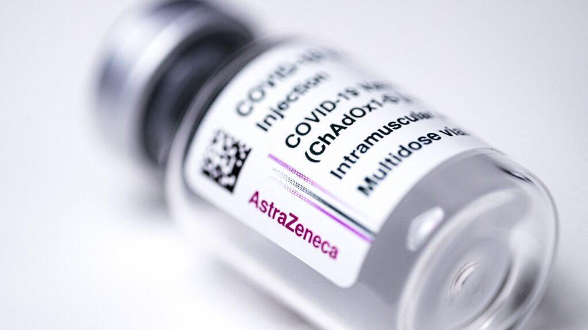
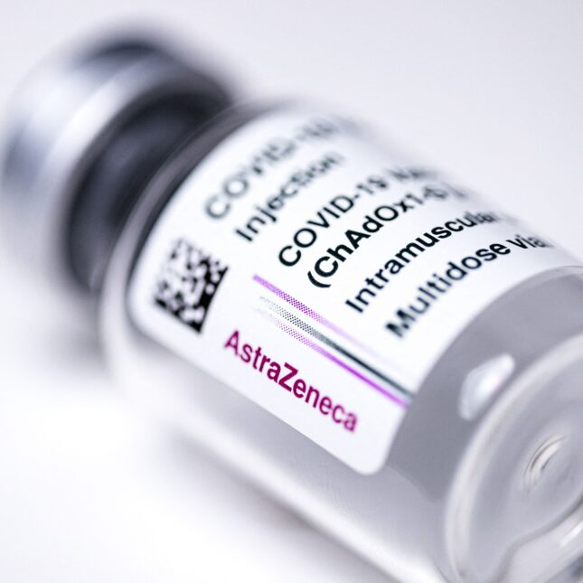

In rare instances, AstraZeneca’s Covid-19 vaccine linked to blood clots, regulators say
I received the second jab in January.I’m 73.It seems like day 16 post jab is the latest reported blood clot incident, so….I’m hoping I’m out of the woods.Next up is, will I ever get a cdc card if U.S. doesn’t approve it, as you know planes and other businesses will require it at some point.
Posted On: 2021-04-10T09:42:00
Posted By: robert schmidt sr.
Pausing AZ doses in countries like Australia and NZ (where there are ZERO cases of COVID-19 in the community outside of quarantine hotels) might make sense given the 4 in one million chance of this very serious problem and circa 1 in a million chance of death is meaningful vs ZERO COVID-19 deaths.
Doing so in Canada, Europe the UK etc where there are meaningful deaths every single day is lunacy given you are literally condemning as many people to death per day as are likely to die as vaccinating the entire population.
And no it isn’t as simple as just using another vaccine.These countries don’t have the luxury like the U.S. of relying entirely on Pfizer, Moderna and J Doing so means a rollout that will take months longer than otherwise and a pandemic that will spread far further and kill many, many more people than otherwise.
Posted On: 2021-04-08T23:09:00
Posted By: OC
My wife has a Heart condition, A double bypass and 8 stints.she has had her first shot and I worrie about how these shots will effect her.I pray everyday she will be fine.
Posted On: 2021-04-08T10:27:00
Posted By: Rose Stock
Yes, and, sadly, this is the quality of the 'expert advice' that the public are treated to.Moves me to either tears — or profanity — or maybe both.
Posted On: 2021-04-08T10:07:00
Posted By: Charles E Colson
v
Posted On: 2021-04-08T09:15:00
Posted By: Jhon_Ellen


Content Date: 2021-04-10
Download Date: 2021-09-16
Document ID: L0C04G4XX